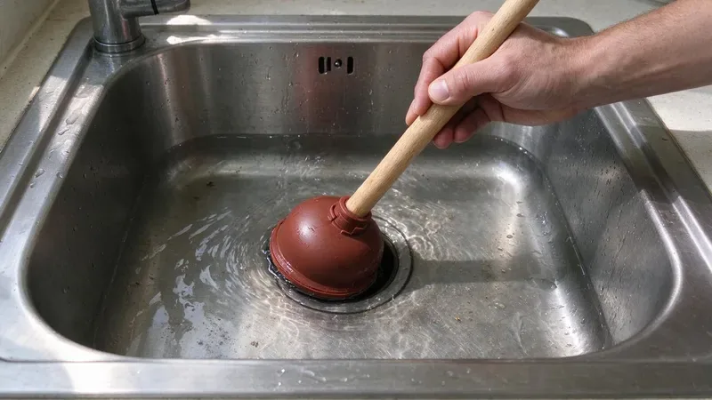
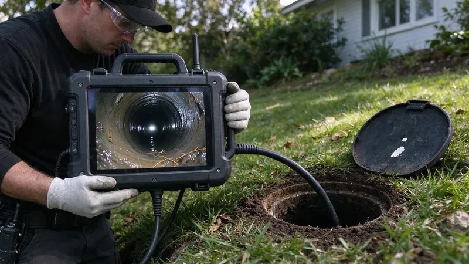

Plumbing Tips & Updates From JFL Plumbing
 15Oct, 2026
15Oct, 2026Slab Leak Warning Signs Every Oregon Homeowner Should Know
Many Oregon homes sit on concrete slabs with water lines buried underneath. Here is how to catch a slab leak early.
 6Oct, 2026
6Oct, 2026How to Protect Your Pipes Before the Next Oregon Freeze
From long winters to rare cold snaps, a few simple steps keep Oregon pipes from splitting overnight.
 27Sep, 2026
27Sep, 2026Hard Water in Oregon: When a Water Softener Pays for Itself
White crust on faucets is the visible part. Here is what hard water does inside your plumbing and when softening is worth it.
 18Sep, 2026
18Sep, 2026Tankless vs. Tank Water Heaters: What Works Best in Oregon
Incoming water temperature, garage conditions and hard water all change the tankless versus tank math for Oregon homes.

9Sep, 2026Kitchen Sink Backups: Causes, Prevention and Quick Solutions
Don't let a clogged kitchen sink ruin your day. Learn why they happen and what to do.
 31Aug, 2026
31Aug, 2026Underground Pipe Damage: Common Causes and Modern Repair Solutions
Underground pipes are out of sight, but not out of mind for Oregon homeowners. Learn what causes damage and how it's fixed.
 22Aug, 2026
22Aug, 2026Hydro Jetting vs. Snaking: Which Drain Cleaning Method Do You Need?
A drain snake and a hydro jetter solve different problems. Here is how to tell which one your clogged line really needs.

13Aug, 2026Why a Sewer Camera Inspection Belongs on Every Oregon Home Inspection
Discover why a sewer camera inspection is a non-negotiable part of any Oregon home inspection.
Have a plumbing question we did not cover?
Our team is happy to talk it through and give you a straight answer.